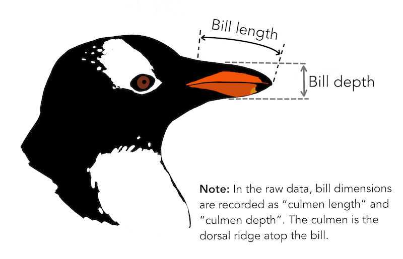
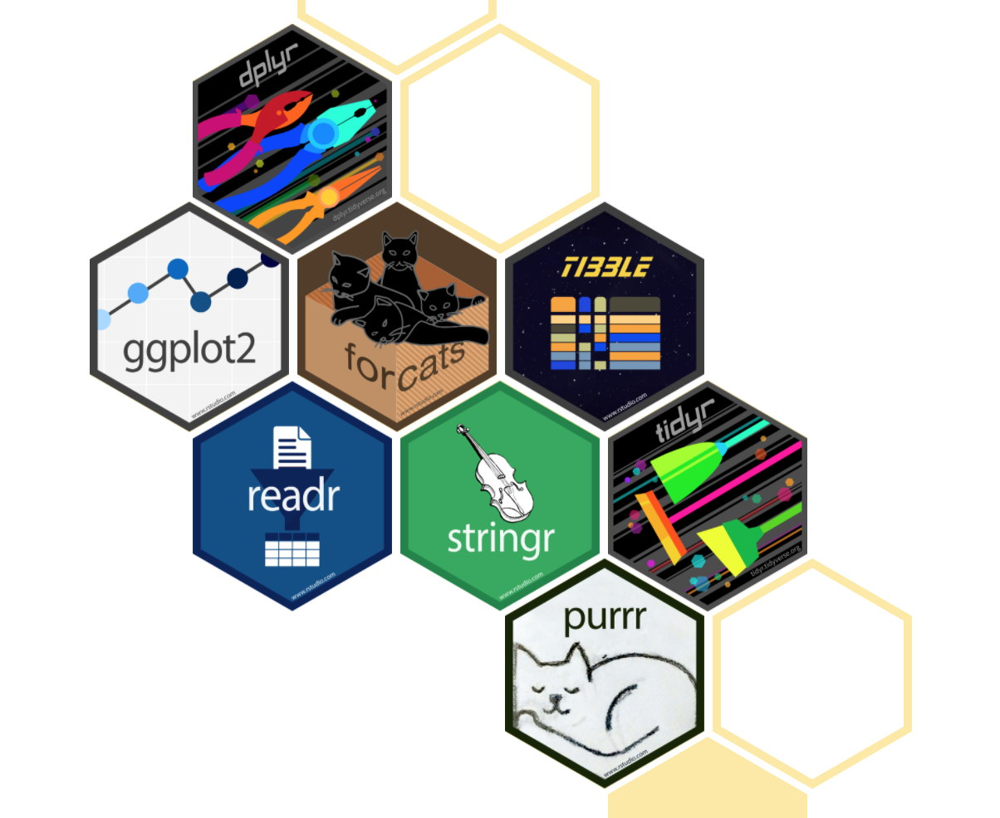
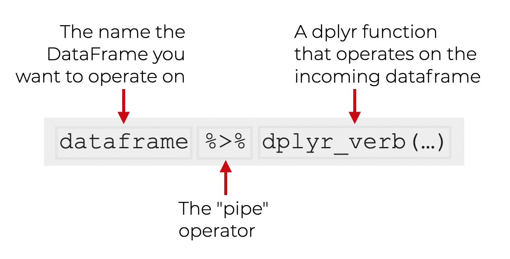
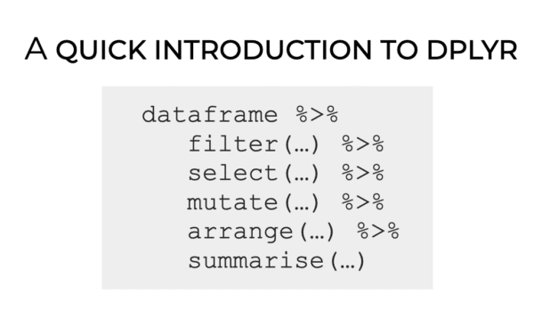
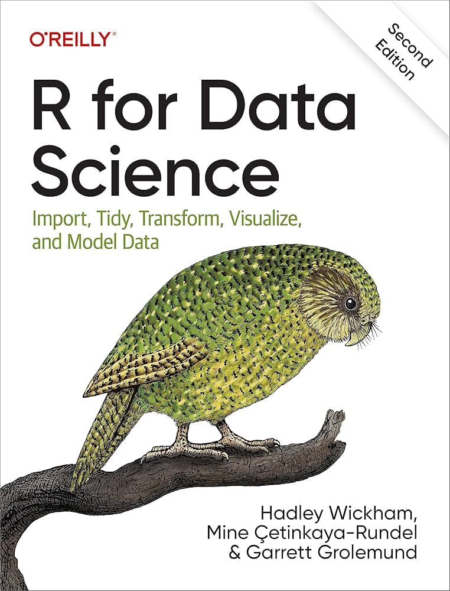

print("Hello world!")Tools for Data Manipulation
IN2039: Data Visualization for Decision Making
Agenda
- Introduction to R
- Reading data with readxl
- Data manipulation with dplyr
Introduction to R
R
A versatile programming language.
It is free!
It is widely used for data cleaning, data visualization, and data modelling.
It can be extended with packages (libraries) developed by other users.
Google Colab
Google’s free cloud collaboration platform for creating R documents.
Run R and collaborate on Jupyter notebooks for free.
Harness the power of GPUs for free to accelerate your data science projects.
Easily save and upload your notebooks to Google Drive.

Let’s try a command in R
What do you think will happen if we run this command?
. . .
[1] "Hello world!"Let’s try another command
What do you think will happen if we run this command?
sum(1, 5, 10). . .
[1] 16Use R as a basic calculator
5 + 1[1] 610 - 3[1] 72 * 4[1] 89 / 3[1] 3Introduction to functions in R
One of the cool things about R is that there are many built-in commands you can use. These are called functions.
. . .
Functions have two basic parts:
The first part is the name of the function (for example,
sum).The second part is the input to the function, which goes inside the parentheses (
sum(1, 5, 15)).
R is strict
R, like all programming languages, is very strict. For example, if you write
sum(1, 100)[1] 101it will tell you the answer, 101.
. . .
But if you write
Sum(1, 100)Error in Sum(1, 100): could not find function "Sum"with the “s” capitalized, he will act like he has no idea what we are talking about!
lo mismo si olvidas incluir un parentesis
Save your work in R objects
Virtually anything, including the results of any R function, can be saved in an object.
This is accomplished by using an assignment operator, which can be an equals symbol (=).
. . .
You can make up any name you want for a R object. However, there are two basic rules for this:
- It has to be different from a function name in R.
- It has to be specific possible yet succinct.
For example
# This code will assign the number 18
# to the object called my_favorite_number
my_favorite_number = 18After running this code, nothing happens. But if we run the object on its own, we can see what’s inside it.
my_favorite_number[1] 18You can also use print(my_favorite_number).
Vectors
So far we have used R objects to store a single number. But in statistics we are dealing with variation, which by definition needs more than one number.
. . .
A R object can also store a complete set of numbers, called a vector.
You can think of a list as a vector of numbers (or values).
. . .
The c() command can be used to combine several individual values into a list.
puedes pensar que el c es por combinar
For example
This code creates two lists or vectors:
my_list = c(1, 2, 3, 4, 5)
my_list_2 = c(10, 10, 10, 10, 10). . .
Let’s see their content:
my_list[1] 1 2 3 4 5my_list_2[1] 10 10 10 10 10Operations
We can do simple operations with vectors. For example, we can sum all the elements of a list.
my_list = c(1, 2, 3, 4, 5)
sum(my_list)[1] 15Indexing
We can index a position in the vector using square brackets with a number like this: [1].
So, if we wanted to print the contents of the first position in my_list, we could write
my_list[1][1] 1A little more about R objects
You can think of R objects as containers that hold values.
A R object can hold a single value, or it can hold a group of values (as in a vector).
So far, we’ve only put numbers into R objects.
. . .
R objects can actually contain three types of values: numbers, characters, and booleans.
Character values
Characters are made up of text, such as words or sentences. An example of a list with characters as elements is:
. . .
many_greetings = c("hi", "hello", "hola", "bonjour", "ni hao", "merhaba")
many_greetings[1] "hi" "hello" "hola" "bonjour" "ni hao" "merhaba". . .
It is important to know that numbers can also be treated as characters, depending on the context.
For example, when 20 is enclosed in quotes ("20") it will be treated as a character value, even though it encloses a number in quotes.
Boolean values
Boolean values are True or False.
We may have a question like:
- Is the first element of the vector
many_greetings"hola"?
. . .
We can ask R to find out and return the answer True or False.
many_greetings[1] == "hola"[1] FALSELogical operators
Most of the questions we ask R to answer with True or False involve comparison operators like >, <, >=, <=, and ==.
The double == sign checks whether two values are equal. There is even a comparison operator to check whether values are not equal: !=.
For example, 5 != 3 is a True statement.
Common logical operators
>(larger than)>=(larger than or equal to)<(smaller than)<=(smaller than or equal to)==(equal to)!=(not equal to)
Programming culture: Trial and error
The best way to learn programming is to try things out and see what happens. Write some code, run it, and think about why it didn’t work.
There are many ways to make small mistakes in programming (for example, typing a capital letter when a lowercase letter is needed).
We often have to find these mistakes through trial and error.
R libraries
Libraries are the fundamental units of reproducible R code. They include reusable R functions, documentation describing how to use them, and sample data.
In this course, we will be working mostly with the following libraries:
tidyversefor data manipulation.ggplot2andggformulafor data visualization.
Reading data with readxl
Loading data in R
In this course, we will assume that data is stored in an Excel file with the above organization. As an example, let’s use the file penguins.xlsx.


The file must be previously uploaded to Google Colab.
The dataset penguins.xlsx contains data from penguins living in three islands.

Alan Vazquez with a gentoo penguin
readxl library
To load data into R, we’ll use the library called readxl. Fortunately, this library comes pre-installed in Google Colab.
However, we need to inform Google Colab that we want to use readxl and its functions. We load the library into R using the following command.
library(readxl)Loading data using readxl
The following code shows how to read the data in the file “penguins.xlsx” into R.
# Load the Excel file into R.
penguins_data = read_excel("penguins.xlsx")The function head()
The function head() allows you to print the first 6 rows of a data frame.
# Print the first 4 rows of the dataset.
head(penguins_data)# A tibble: 6 × 8
species island bill_length_mm bill_depth_mm flipper_length_mm body_mass_g
<chr> <chr> <dbl> <dbl> <dbl> <dbl>
1 Adelie Torgersen 39.1 18.7 181 3750
2 Adelie Torgersen 39.5 17.4 186 3800
3 Adelie Torgersen 40.3 18 195 3250
4 Adelie Torgersen NA NA NA NA
5 Adelie Torgersen 36.7 19.3 193 3450
6 Adelie Torgersen 39.3 20.6 190 3650
# ℹ 2 more variables: sex <chr>, year <dbl>Mini-activity (solo mode)
Open the following Google Colab link:
https://colab.research.google.com/drive/1xLoaOMharQmmasNApjm38jZcw-gtcxvm?usp=sharing
Copy the notebook to your drive.
Answer the questions.
Data manipulation with dplyr
A New Library: dplyr

dplyr allows you to manipulate data and generate statistical summaries.
It is part of a collection of data science packages called tidyverse.
Load it to Google Colab with the following code.
library(dplyr)pipe
One of the most important commands of dplyr is pipe, which is executed using the operator %>%. This operator sends an object to a calling function or expression.
The grammar for using pipe is as follows:

dplyr’s verbs
dplyr is a data manipulation grammar that provides a set of verbs (functions) to solve the most common data manipulation challenges:
filter()selects observations based on their values.select()selects variables based on their names.mutate()adds new variables that are functions of existing variables.arrange()changes the order of rows.summarise()reduces multiple values to a single numerical summary.

To practice, we will use the dataset penguins_data.
Filter observations with filter()
We can filter the data to obtain penguins with a body mass greater than 5000.
penguins_data %>% filter(body_mass_g > 5000) %>% head()# A tibble: 6 × 8
species island bill_length_mm bill_depth_mm flipper_length_mm body_mass_g
<chr> <chr> <dbl> <dbl> <dbl> <dbl>
1 Gentoo Biscoe 50 16.3 230 5700
2 Gentoo Biscoe 50 15.2 218 5700
3 Gentoo Biscoe 47.6 14.5 215 5400
4 Gentoo Biscoe 46.7 15.3 219 5200
5 Gentoo Biscoe 46.8 15.4 215 5150
6 Gentoo Biscoe 49 16.1 216 5550
# ℹ 2 more variables: sex <chr>, year <dbl>Recall that
head()prints the first 5 rows of a dataframe. We must remove it to have the entire new dataframe.
We can also filter the observations for the species “Gentoo.”
penguins_data %>% filter(species == "Gentoo") %>% head()# A tibble: 6 × 8
species island bill_length_mm bill_depth_mm flipper_length_mm body_mass_g
<chr> <chr> <dbl> <dbl> <dbl> <dbl>
1 Gentoo Biscoe 46.1 13.2 211 4500
2 Gentoo Biscoe 50 16.3 230 5700
3 Gentoo Biscoe 48.7 14.1 210 4450
4 Gentoo Biscoe 50 15.2 218 5700
5 Gentoo Biscoe 47.6 14.5 215 5400
6 Gentoo Biscoe 46.5 13.5 210 4550
# ℹ 2 more variables: sex <chr>, year <dbl>Select columns with select()
Select the columns species, body_mass_g and sex.
penguins_data %>% select(species, body_mass_g, sex) %>% head()# A tibble: 6 × 3
species body_mass_g sex
<chr> <dbl> <chr>
1 Adelie 3750 male
2 Adelie 3800 female
3 Adelie 3250 female
4 Adelie NA <NA>
5 Adelie 3450 female
6 Adelie 3650 male select() and filter()
Select the columns species, body_mass_g, and sex. Then, filter the data for the species “Gentoo.”
penguins_data %>%
select(species, body_mass_g, sex) %>%
filter(species == "Gentoo") %>%
head()# A tibble: 6 × 3
species body_mass_g sex
<chr> <dbl> <chr>
1 Gentoo 4500 female
2 Gentoo 5700 male
3 Gentoo 4450 female
4 Gentoo 5700 male
5 Gentoo 5400 male
6 Gentoo 4550 femaleCreate new columns with mutate()
With mutate(), we can add new columns (variables) that are functions of the columns in the data. For example, we can calculate the division of bill_length_mm and bill_depth_mm.
penguins_data %>%
mutate("RadioLengthDepth" = bill_length_mm/bill_depth_mm) %>%
select(species, body_mass_g, sex, RadioLengthDepth) %>%
head()# A tibble: 6 × 4
species body_mass_g sex RadioLengthDepth
<chr> <dbl> <chr> <dbl>
1 Adelie 3750 male 2.09
2 Adelie 3800 female 2.27
3 Adelie 3250 female 2.24
4 Adelie NA <NA> NA
5 Adelie 3450 female 1.90
6 Adelie 3650 male 1.91Sort the observations with arrange()
We can sort the data based on a column, say bill_length_mm.
penguins_data %>%
arrange(bill_length_mm) %>%
head()# A tibble: 6 × 8
species island bill_length_mm bill_depth_mm flipper_length_mm body_mass_g
<chr> <chr> <dbl> <dbl> <dbl> <dbl>
1 Adelie Dream 32.1 15.5 188 3050
2 Adelie Dream 33.1 16.1 178 2900
3 Adelie Torgersen 33.5 19 190 3600
4 Adelie Dream 34 17.1 185 3400
5 Adelie Torgersen 34.1 18.1 193 3475
6 Adelie Torgersen 34.4 18.4 184 3325
# ℹ 2 more variables: sex <chr>, year <dbl>To sort in descending order we use desc(bill_length_mm) in arrange().
penguins_data %>%
arrange(desc(bill_length_mm)) %>%
head()# A tibble: 6 × 8
species island bill_length_mm bill_depth_mm flipper_length_mm body_mass_g
<chr> <chr> <dbl> <dbl> <dbl> <dbl>
1 Gentoo Biscoe 59.6 17 230 6050
2 Chinstrap Dream 58 17.8 181 3700
3 Gentoo Biscoe 55.9 17 228 5600
4 Chinstrap Dream 55.8 19.8 207 4000
5 Gentoo Biscoe 55.1 16 230 5850
6 Gentoo Biscoe 54.3 15.7 231 5650
# ℹ 2 more variables: sex <chr>, year <dbl>Summarize with summarise()
We can calculate the average of the bill_length_mm, bill_depth_mm, and body_mass_g columns.
penguins_data %>%
select(bill_length_mm, bill_depth_mm, body_mass_g) %>%
summarise(PromLength = mean(bill_length_mm, na.rm = TRUE),
PromDepth = mean(bill_depth_mm, na.rm = TRUE),
PromMass = mean(body_mass_g, na.rm = TRUE))# A tibble: 1 × 3
PromLength PromDepth PromMass
<dbl> <dbl> <dbl>
1 43.9 17.2 4202.The argument
na.rm == TRUEallows us to ignore the missing data.
Saving results in new objects
After performing operations on our data, we can save the modified dataset as a new object.
summary_penguins_data = penguins_data %>%
select(bill_length_mm, bill_depth_mm, body_mass_g) %>%
summarise(PromLength = mean(bill_length_mm, na.rm = TRUE),
PromDepth = mean(bill_depth_mm, na.rm = TRUE),
PromMass = mean(body_mass_g, na.rm = TRUE))And apply the dplyr verbs to the new object.
summary_penguins_data %>% head()# A tibble: 1 × 3
PromLength PromDepth PromMass
<dbl> <dbl> <dbl>
1 43.9 17.2 4202.More on dplyr

Final remarks
dplyr is a library that allows us to manipulate data in R.
Variable types help specify the operations and visualizations we can apply to the data.
There are appropriate or designed graphs for visualizing numeric or categorical variables.
In this course, we will see several graphs for each variable type and their combinations.
Comments
Sometimes we write things in the coding window that we want R to ignore. These are called comments and start with
#.R will ignore the comments and just execute the code.
Si desea escribir un comentario que ocupe más de una línea, es una buena idea poner un # al principio de cada línea.